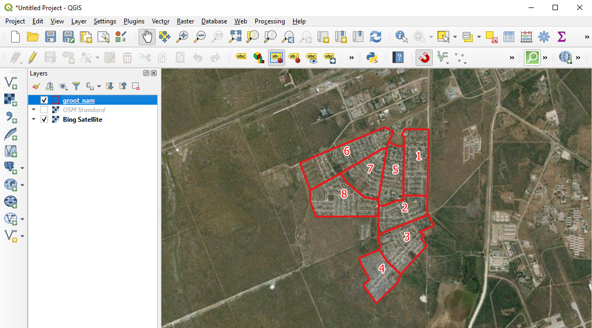
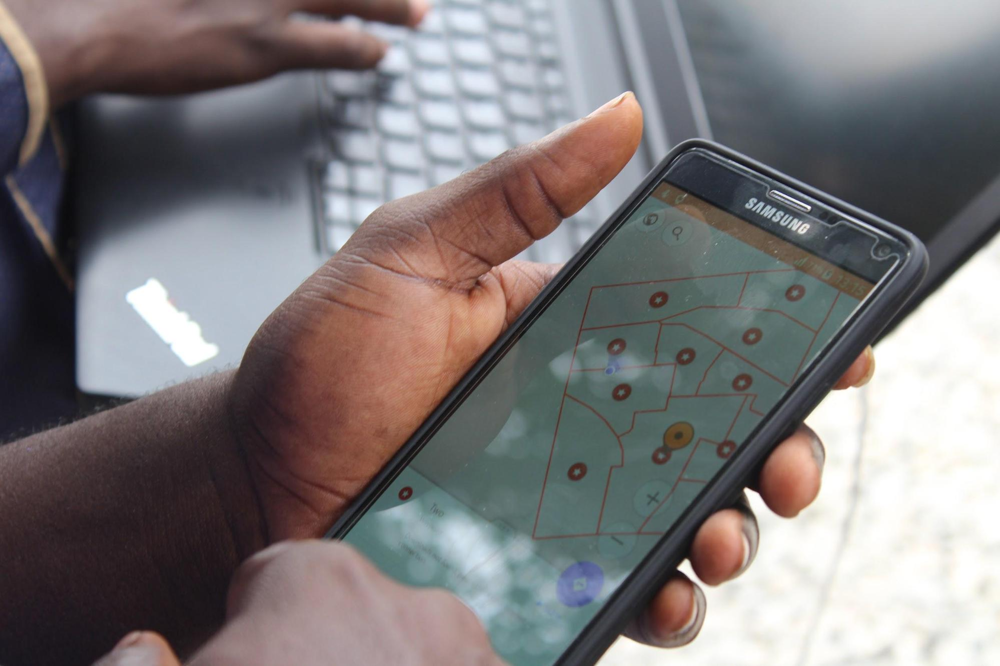

4.1 Creating Mapping Section using QGIS
Course Objectives
In this section, you should be able to:
- Understand how to create mapping section using QGIS
- Understand how to load mapping section in OSMAnd
Learning Activities
Central to effective and successful field data collection is a well thought out field data collection plan. This will ensure that field teams face the least number of challenges while out in the field, thus reducing the number of calls for field support coming to the supervisor.
When planning to deploy a team, it is important for the supervisor to have a good picture of how many work days they have versus the man power available to do the work. Once this is done, they will then go ahead and create small sections of the mapping area, that can be covered in a day by a team of two mappers or a single mapper depending on the team arrangement.
Similar to the grid in Tasking Manager, creating sections for mapping allows supervisors to divide tasks, monitor progress, and be able to assess gaps or quality issues. We already understand on how to create mapping section using Field Mapping Tasking Manager previously. This section will explains on how to create a manual mapping section using QGIS and load it with OSMAnd.
Creating Mapping Sections in QGIS for Printed Maps
The following activity covers the process of generating mapping sections in QGIS for printing. This activity uses the example of leading a team of 8 mapping volunteers to map Grootfontein Town, in Northern Namibia, during a Malaria Elimination Project. Example files are provided for this activity but can be followed with files provided by the user.
To begin, open QGIS on your computer and start a new project. Using QuickMapServices as a basemap, navigate to Grootfontein Town, Northern Namibia.

Create an empty shapefile by selecting Layer –> Create Layer –> New Shapefile Layer. After selecting the location and name of the file, make sure to assign the file as ‘Polygon’.

Enable editing, select the ‘New feature’ too. Create sections of the town, giving them numbers. These sections should follow natural features or prominent landmarks such as swamps or roads. This is to ensure that ease of location of these sections by mappers.

Once all sections are created, style for visibility.

Make maps showing these sections. These maps can be printed out for sharing with the mapping volunteers. Teams can now head to their allocated sections to conduct field mapping.
Creating and Importing Mapping Sections into OSMAnd
The following activity covers the process of importing files into OSMAnd based on the previous activity (generating mapping sections in QGIS). This activity uses the example of leading a team of 8 mapping volunteers to map Grootfontein Town, in Northern Namibia, during a Malaria Elimination Project.

OSMAnd provides a great alternative to printing out these sections maps. With OSMAnd, the Supervisor can instead use the following steps to give sections to team members for use in the field directly on their mobile devices.
- Create section centroids from the grootfontein_sections.shp giving you grootfontein_sections_centroids.shp. Create centroids by selecting the Vector menu –> Geometry Tools –> Centroids. In the sub-menu, select the grootfontein_sections.shp file as the Input layer, click Run.
- Export the sections shapefiles (grootfontein_sections.shp) and the centroids shapefile (grootfontein_sections_centroids.shp) as a .gpx giving you a grootfontein_sections.gpx and grootfontein_sections_centroids.gpx.
- Transfer these two .gpx files from you computer to the _/Phone/Android/data/net.osmand/files/tracks _folder
- Open OSMAnd application and load these two files via Menu button -> My Places –> Tracks –> Browse to where the files are located
The sections gpx file will show you boundaries of the sections and the centroids gpx file will show you section numbers once a centroid point is selected. With these two, volunteers can move in the field using the OSMAnd app, locating their positions each time as well as the sections in which they are standing.
[Quiz] Check Your Knowledge
-
During planning, it is important for the supervisor to have a good picture of how many work days they have versus the man power available to do the work.
a. True
b. False
-
OSMAnd can load .gpx files to shows the mapping grid and map markers
a. True
b. False
Answer: 1. A | 2. A
Activity Checklist
Now you already understand on how manually create a mapping grid to help your data collection project. By the end of this section you should be able to:
- Create a mapping grid using QGIS
- Load the mapping grid in OSMAnd